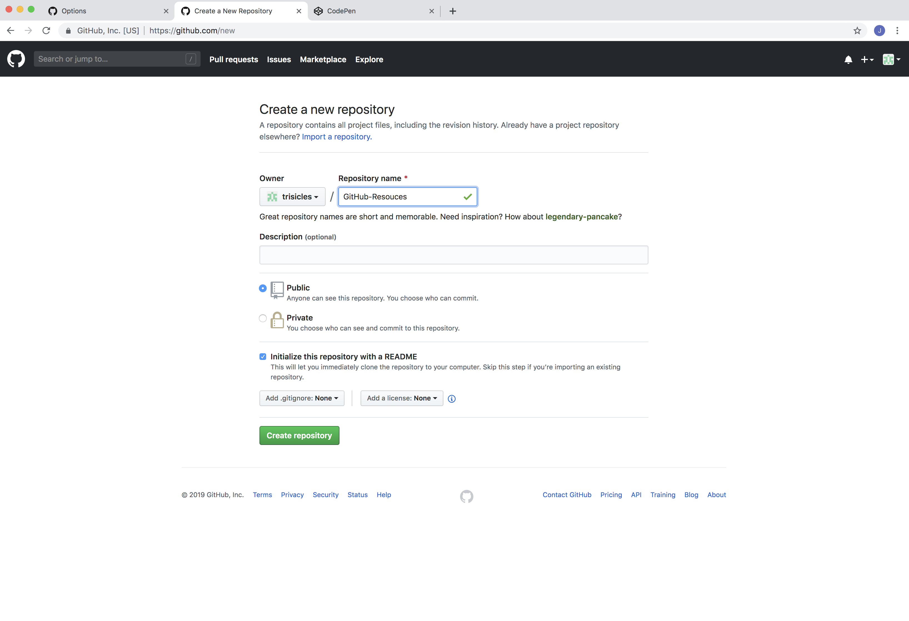
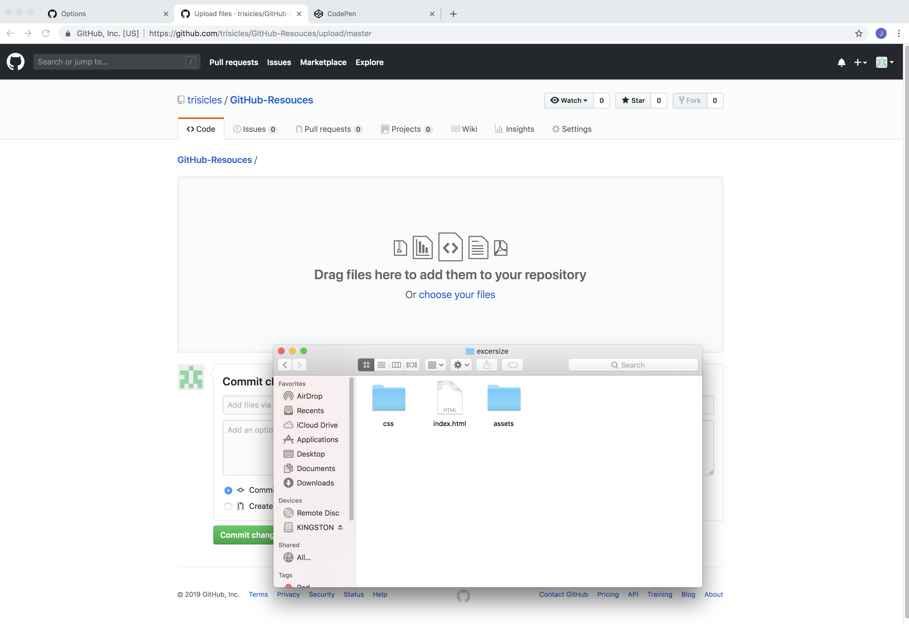
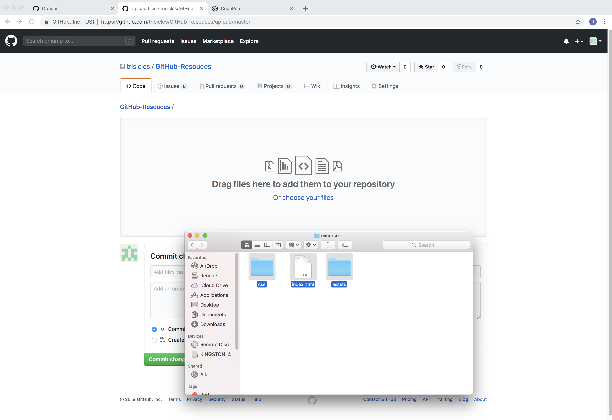
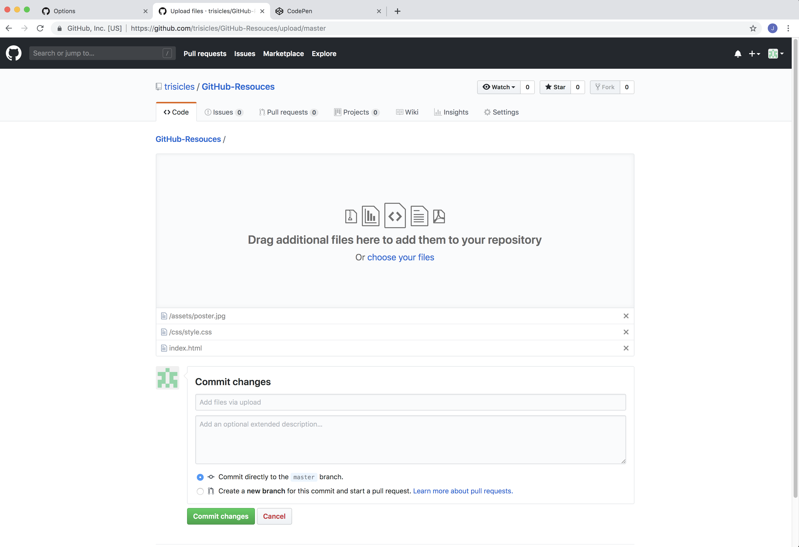
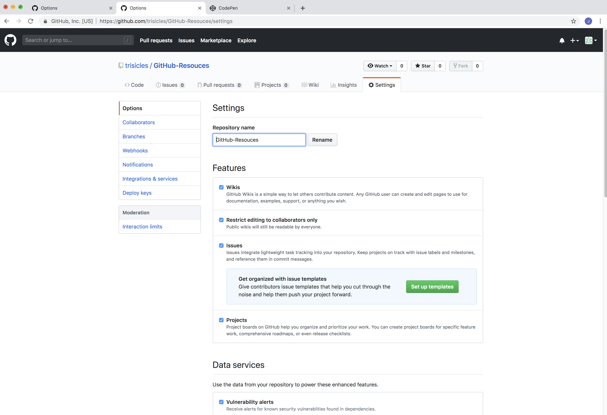
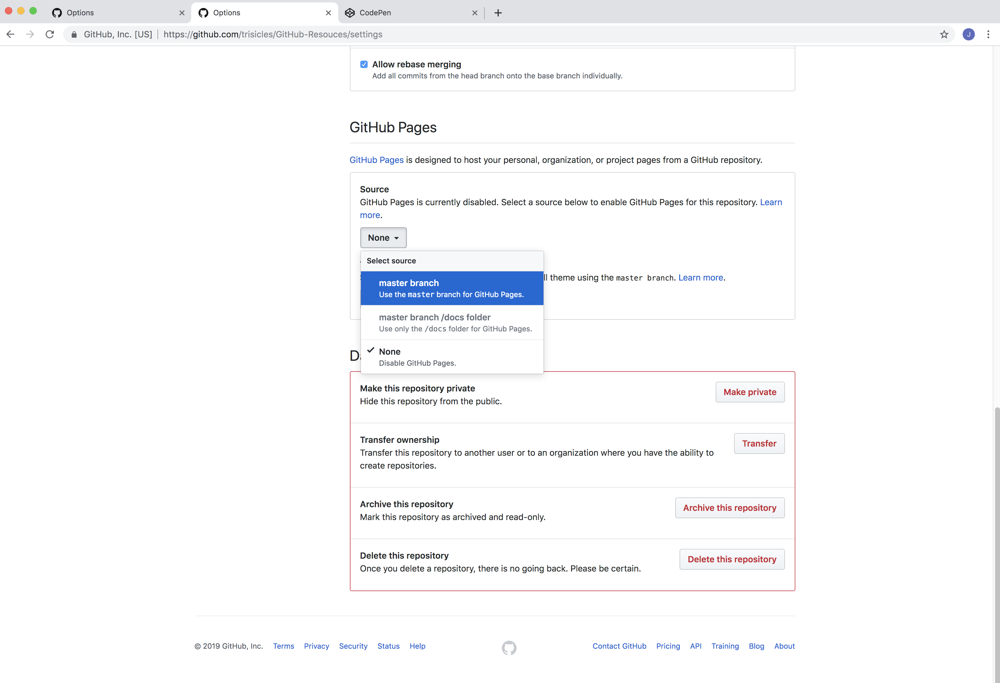
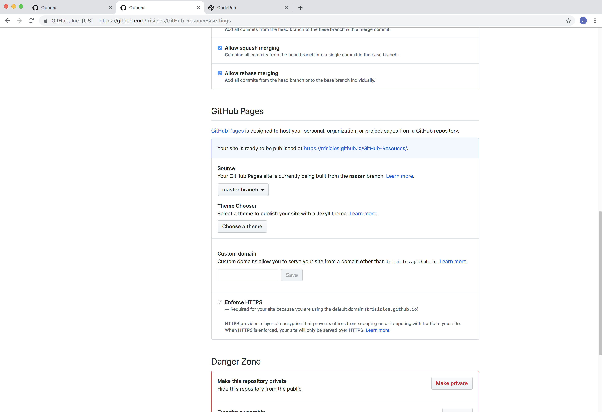
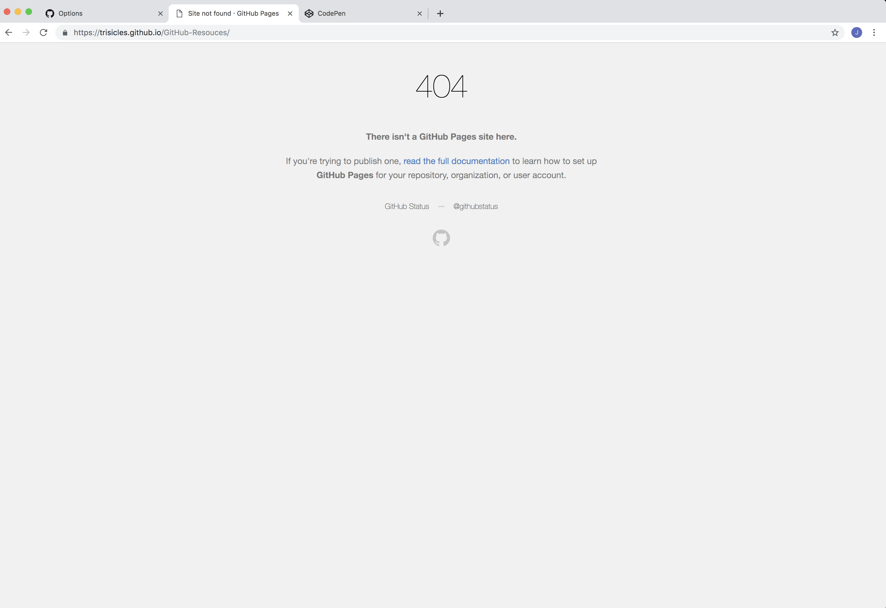
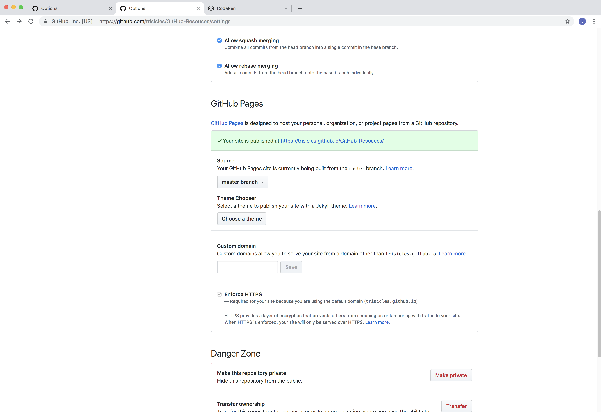
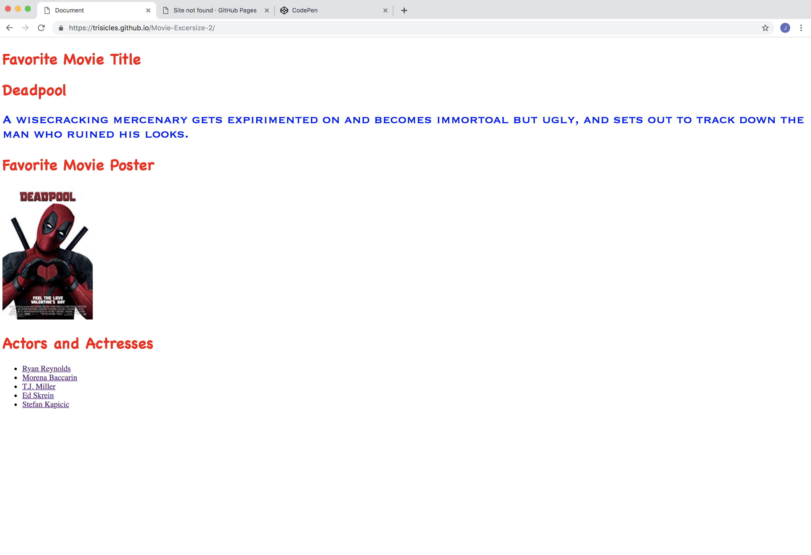

This will be a step-by-step resource on how to make and publish your own website using GitHub so you don't forget.
In the top right corner, next to your profile dropdown, there will be a little '+' sign. Clicking on this will give us an option to make a new repository. Go ahead and click on "New Repository"
Here is the main page for setting up a new repository.
Name the file in the box given. Make sure to check the 'Read Me' box, then click 'Make Repository'.
This is where you will set up files. To add files, click the 'Upload Files' button.
Open your files. To do this correctly, make sure you see the "Assets" folder, the "CSS folder", and the index.html file.
Highlight all three icons and drag them into the GitHub window.
Tada! You just uploaded files into GitHub.
Here is you can see all of your uploaded files in one space. This is so you know you didn't completely ruin your project.
Now that you have confirmation, it's time to upload your GitHub. Click the settings button.
You're here! Congrats.
You're going to scroll down until you see the title "GitHub Pages". Click the first drop down menu and set it to "Master Branch".
If you see the link being blue, your page is not ready. If you click on it, you will get this:
A big fat error code. Amazing.
The link is green! This means your page is ready. Click that sucker.
Here is your webpage! Pay no mind that the url is different- GitHub wasn't working and I was getting impatient.